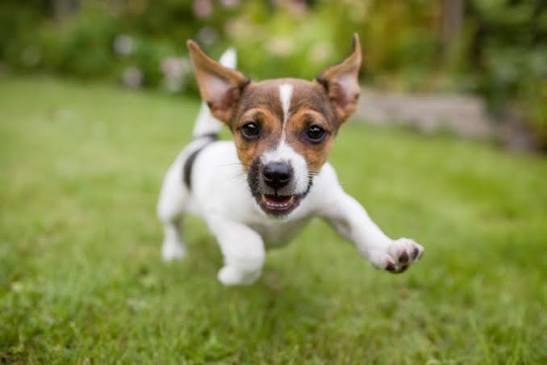
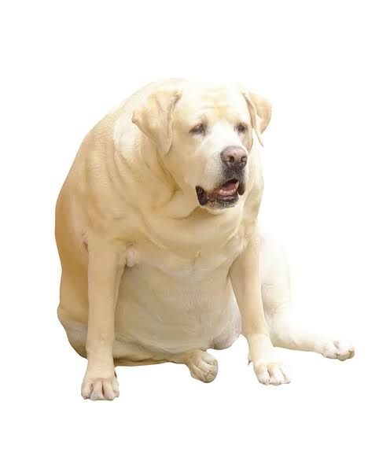
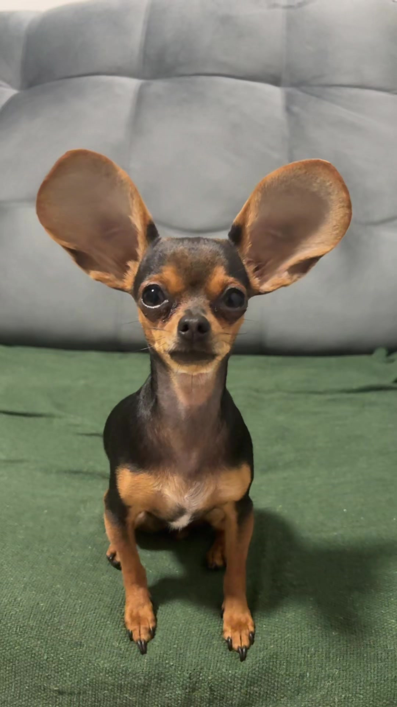

Tudo sobre cachorrinhos.
Um cachorro saudável precisa de comida certa, água fresca , passeios e carinho. Filhotes só passeiam co as vacinas em dia .
Ofereça uma ração adequada á idade e o porte do cão e e sempre deixe água fresca disponível.
Passear gasta energia, fortalece os músculos e ajuda o cão a conviver com outras pessoas e animais.
Escove os dentes só com pasta para cães: a pasta de dente de humanos pode fazer mal a eles.
Cada raça tem um porte e um jeito. Alguns da mais queridas pelos sócios do Clube Patinhas.
,


Veja algumas dicas importantes para cuidar do seu cachorro:
Quer aprender mais sobre cachorros? Visite nosso site ou entre em contato conosco!
Saiba mais sobre cachorros